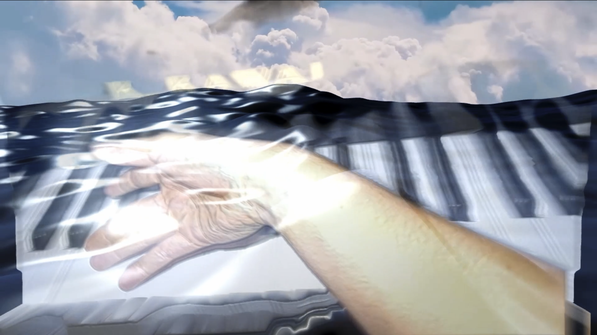
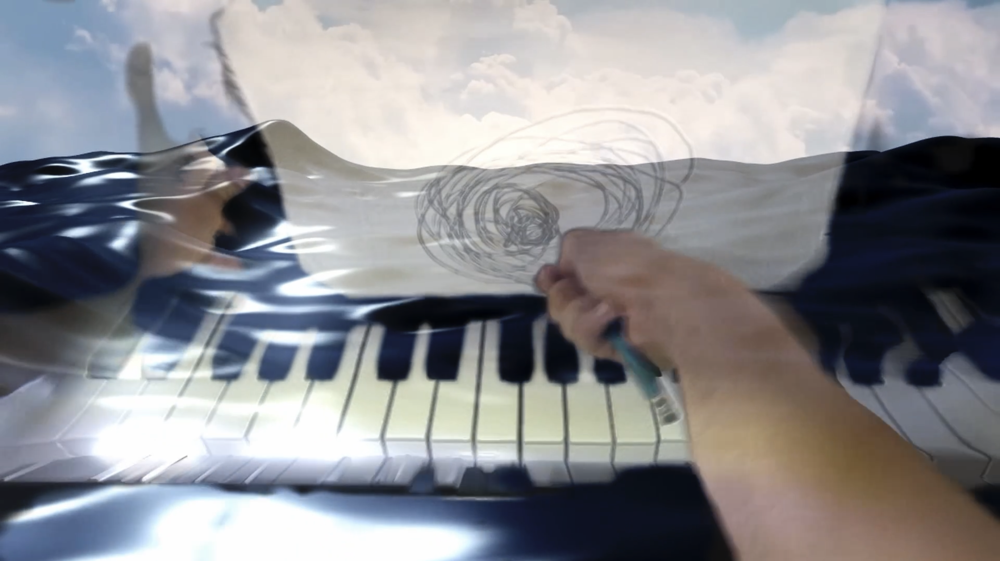
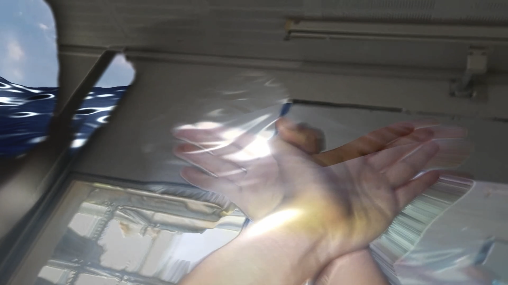
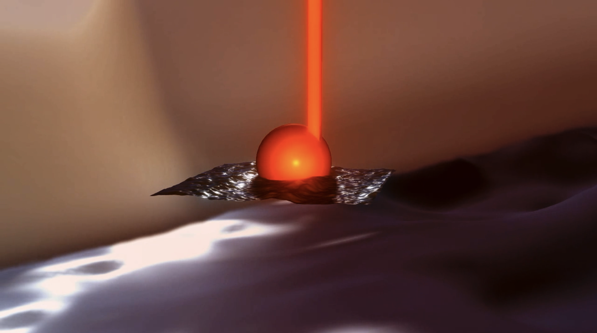

C📹👋🎹🌊🎼🎤H
uses recording technology to rewire musical gestures and explore the speculative space of listening




Philosopher Slavoj Žižek suggests the idea of ‘virtual reality’ is a poor one; instead we should think of the ‘reality of the virtual.’ If we accept that our imagination prescribes unrealized potentials to that which seems actual before our perception, we can read the virtuality of music backwards from a common notion of ‘musicality.’
The figurations, characters, and affects of the virtual space of animated sound this musicality reveals, however, are interdependent with an already-existing real – however one conceives such a notion.
The figurations, characters, and affects of the virtual space of animated sound this musicality reveals, however, are interdependent with an already-existing real – however one conceives such a notion.
The piano contains a reflection of the capacity of human hands: touch is inscribed upon the technics of the instrument. So, with this work, I use the hand both as pre-forming technical medium and site of transfer between actualized matter and potential virtuality, between unformed sound and fictionalized music.
That everything is seen from an artificial eye and ear (the camera and microphone) can be read as not only an acknowledgement of the deterministic role our other senses play in mediating this zone of transfer, but also of the propensity of today’s recording media to further exaggerate the transfer function.